library(ggplot2)
library(tidyverse)4 Inferência para Uma População
Ao estudarmos a distribuição amostral de um estimador, demos um passo importante para responder a uma pergunta central da inferência estatística: “Quão confiável é o valor obtido a partir de uma única amostra?”
Agora é hora de usar esse conhecimento para tomar decisões concretas. A partir de uma estimativa pontual (como a média ou a proporção amostral), queremos expressar o grau de incerteza associado a essa estimativa, ou ainda, testar afirmações sobre a população com base nos dados da amostra.
Essas duas tarefas constituem os pilares da inferência estatística:
- Intervalos de confiança, que fornecem uma faixa de valores plausíveis para o parâmetro populacional, com um certo nível de confiança.
- Testes de hipótese, que avaliam se os dados oferecem ou não evidências suficientes para rejeitar uma suposição sobre a população.
O raciocínio por trás dessas ferramentas se ancora na distribuição amostral: Se sabemos como o estimador se comporta ao longo de muitas amostras, conseguimos avaliar o quanto o valor observado se desvia (ou não) do que seria esperado sob determinada hipótese. O enfoque computacional traz enormes vantagens para o aprendizado dessa etapa. Com simulações, podemos:
- Construir empiricamente intervalos de confiança, observando em que proporção eles contêm o verdadeiro parâmetro.
- Visualizar a lógica dos testes de hipótese, comparando valores observados com a distribuição sob a hipótese nula.
- Entender o erro tipo I e tipo II de forma intuitiva, simulando diferentes cenários.
- Explorar o impacto do tamanho da amostra, da variabilidade e do nível de significância.
Nosso foco hoje será nos casos mais importantes da inferência para uma população:
- Intervalos de confiança e testes de hipóteses para a média populacional (caso normal)
- Intervalos de confiança e testes de hipótese para a média populacional (caso amostras grandes)
- Intervalos de confiança e testes para a proporção populacional
- Intervalos de confiança e testes para a variância populacional (caso normal)
Em todos os casos, vamos alternar entre teoria e prática, reforçando os conceitos com experimentos computacionais no R. Essa abordagem não só facilita o entendimento, como prepara você para aplicar inferência de forma crítica e fundamentada em situações reais. Para finalizar, serão apresentadas as funções automáticas do R que realizam intervalos de confiança e testes de hipóteses para uma população.
4.1 Intervalos de Confiança
Ao estimarmos um parâmetro populacional \(\theta\), como a média \(\mu\) ou a proporção \(p\), a partir de uma amostra aleatória, obtemos apenas uma estimativa pontual \(\hat{\theta}\). No entanto, como essa estimativa depende da amostra coletada, ela está sujeita à variabilidade amostral. Para expressar essa incerteza, utilizamos intervalos de confiança, que fornecem um intervalo de valores plausíveis para o parâmetro desconhecido \(\theta\), com base nas propriedades de distribuição do estimador \(\hat{\theta}\).
Formalmente, um intervalo de confiança bilateral com nível de confiança \((1-\alpha)\) é construído a partir de dois limites, \(L(X)\) e \(U(X)\), que são funções da amostra \(X\). Esses limites são, portanto, variáveis aleatórias, e o intervalo \([L(X), U(X)]\) deve satisfazer:
\[ \mathbb{P}(L(X) \leq \theta \leq U(X)) = 1 - \alpha \]
onde:
- \(\theta\) é o parâmetro populacional desconhecido
- \(L(X)\) e \(U(X)\) são, respectivamente, o limite inferior e superior do intervalo de confiança
- \(\alpha\) é o nível de significância, isto é, a probabilidade de que o intervalo não contenha o parâmetro verdadeiro
Dessa forma, interpretamos o nível de confiança \(1 - \alpha\) como a proporção de vezes (no longo prazo) em que o intervalo \([L(X), U(X)]\), construído da mesma maneira a partir de amostras aleatórias independentes, conteria verdadeiro valor de \(\theta\).
Nesta seção, abordaremos a construção de intervalos de confiança bilaterais tanto por métodos analíticos quanto por simulações, desenvolvendo uma compreensão intuitiva e rigorosa de sua interpretação e uso. Os casos unilaterais serão explorados posteriormente, na Lista 2.
4.2 Média Populacional (caso normal com variância conhecida)
Vamos começar estudando a construção do intervalo de confiança para a média populacional \(\mu\), assumindo que:
- Os dados vêm de uma população com distribuição normal \(N(\mu,\sigma^2)\)
- A variância populacional \(\sigma^2\) é conhecida
- A amostra \(X_1, X_2, …, X_n\) é aleatória e de tamanho \(n\).
Sabemos que, sob essas condições, a média amostral \(\bat{X}\) segue uma distribuição normal:
\[ \bar{X} \sim N(\mu, \sigma^2/n) \]
Usando a padronização da média amostral, temos:
\[ Z = \frac{\bar{X} - \mu}{\sigma/\sqrt{n}} \sim N(0,1) \]
Para construir um intervalo de confiança bilateral com nível de confiança \(1 − \alpha\) (por exemplo, 95%), utilizamos o quantil \(z_{\alpha/2}\) da distribuição normal padrão. A figura a seguir retrata essa quantidade:
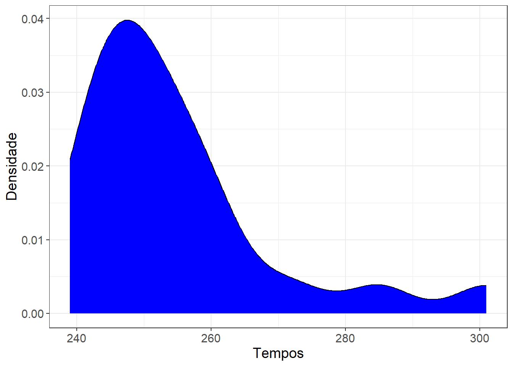
No \(R\), esse valor crítico é obtido da seguinte forma (para uma confiança de 95%, por exemplo):
# Nível de confiança
conf = 0.95
# Nível de significância
alfa = 1-conf
# Valor crítico
z_critico = qnorm(alfa/2,lower.tail=F)Isso nos leva ao seguinte intervalo com confiança \(1−\alpha\) para a média populacional \(\mu\):
\[ IC_{1-\alpha}(\mu) = \left[ \bar{X} - z_{\alpha/2} \frac{\sigma}{\sqrt{n}}, \; \bar{X} + z_{\alpha/2} \frac{\sigma}{\sqrt{n}} \right] \]
A interpretação correta é: se repetíssemos o processo de amostragem muitas vezes, cerca de \(100 \cdot (1−\alpha)%\) dos intervalos construídos conteriam o verdadeiro valor de \(\mu\). Na próxima etapa, vamos explorar computacionalmente como esse tipo de intervalo se comporta na prática, usando simulações para verificar sua frequência de acerto e o impacto de diferentes parâmetros.
4.2.1 Exemplo
Considere que \(X_1, X_2, …, X_n\) seja uma amostra aleatória de tamanho \(n = 25\) de uma população com distribuição Normal com parâmetros \(\mu = 170\) e \(\sigma^2 = 100\). Vamos simular \(B = 100\) amostras dessa população e, para cada amostra, vamos construir o intervalo de confiança com 95% de confiança, assumindo que a variância é conhecida.
# Parâmetros populacionais de X
media_real = 170
sigma_real = 10
# Tamanho da amostra
n = 25
# Quantidade de réplicas
B = 100
# Nível de confiança
Conf = 0.95
# Nível de signifiância
Alfa = 1-Conf
# Cria o vetor de B médias amostrais da população teórica
set.seed(2025)
medias = replicate(B, mean(rnorm(n, media_real, sigma_real)))
# Z crítico e erro padrão
z_critico = qnorm(Alfa/2,lower.tail=F)
erro_padrao = sigma_real / sqrt(n)
# Intervalos de confiança
inferior = medias - z_critico * erro_padrao
superior = medias + z_critico * erro_padrao
# Verifica se o intervalo contém o valor verdadeiro
Contem = inferior <= media_real & superior >= media_real
# Cobertura dos intervalos
Cobertura = sum(Contem)/length(Contem)
# Dados para o gráfico
dados = data.frame(
Replica = 1:B,
Inferior = inferior,
Superior = superior,
Contem = Contem
)
ggplot(dados, aes(x = Replica)) +
geom_segment(aes(xend = Replica, y = Inferior, yend = Superior, color = Contem), size = 1) +
geom_hline(yintercept = media_real, linetype = "dashed", color = "black") +
scale_color_manual(values = c("TRUE" = "blue", "FALSE" = "red")) +
labs(
title = expression("IC para " * mu * " (caso normal e " * sigma^2 * " conhecida)"),
x = "Replicações",
y = "Intervalo de Confiança"
) +
theme_minimal()+
theme(legend.position = "none")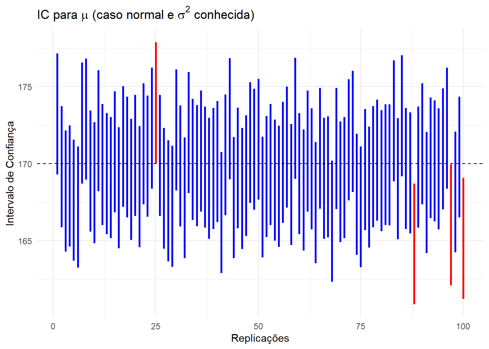
Assim, conseguimos uma cobertura de 96% dos intervalos (próxima do valor verdadeiro de 95%). Essa cobertura vai se aproximando cada vez mais do valor de 95% à medida que aumentamos o valor de \(B\) (Experimente alterar \(B\) para 10000).
4.2.2 Exercício: impacto do tamanho da amostra
Retorne ao exemplo anterior e troque o tamanho da amostra de \(n=25\) para \(n=100\). Compare os dois gráficos. O que você nota de diferente?
4.3 Média Populacional (caso normal com variância desconhecida)
Vamos agora estudar a construção do intervalo de confiança para a média populacional μ, assumindo que:
- Os dados vêm de uma população com distribuição normal \(N(\mu,\sigma^2)\)
- A variância populacional σ² é desconhecida
- A amostra \(X_1, X_2, …, X_n\) é aleatória e de tamanho n, com n pequeno \((n<30)\).
Nesse caso, como não conhecemos \(\sigma\), utilizamos o desvio padrão amostral \(S\), definido por:
\[ S = \sqrt{\frac{1}{n-1} \sum_{i=1}^{n} (X_i - \bar{X})^2} \]
A média amostral \(\bar{X}\) ainda é um estimador de \(\mu\), mas a distribuição agora que é utilizada é a \(T\) de Student com \(n−1\) graus de liberdade:
\[ T = \frac{\bar{X} - \mu}{S/\sqrt{n}} \sim t(n-1) \]
Essa variabilidade adicional alarga a cauda da distribuição, e isso é capturado pela distribuição T de Student, que possui as seguintes características:
- Média zero, como a normal;
- Caudas mais pesadas, ou seja, maior probabilidade de valores extremos;
- Depende de um parâmetro: os graus de liberdade \(n−1\)
À medida que o tamanho da amostra aumenta \((n \to \infty)\), a distribuição \(T\) se aproxima da distribuição normal. Por isso, com amostras grandes, o uso da normal ou da \(T\) costuma levar a resultados semelhantes. Para construir um intervalo de confiança bilateral com nível de confiança \(1−α\) (por exemplo, 95%), utilizamos o quantil \(t_{n-1, α/2}\) da distribuição \(T\) de Student com \(n−1\) graus de liberdade. Veja na figura a seguir:

No \(R\), esse valor crítico é obtido da seguinte forma (para uma confiança de 95%, por exemplo):
# Tamanho da amostra
n = length(dados)
# Nível de confiança
conf = 0.95
# Nível de significância
alfa = 1-conf
# Valor crítico
t_critico = qt(alfa/2,df=n-1,lower.tail=F)Isso nos leva ao seguinte intervalo confiança para \(\mu\) com nível de confiança \(1 − \alpha\) é dado por:
\[ IC_{1-\alpha}(\mu) = \left[ \bar{X} - t_{n-1, \alpha/2} \frac{S}{\sqrt{n}}, \; \bar{X} + t_{n-1, \alpha/2} \frac{S}{\sqrt{n}} \right] \]
A interpretação correta permanece: se repetíssemos o processo de amostragem muitas vezes, cerca de \(100 \cdot (1−\alpha)%\) dos intervalos construídos conteriam o verdadeiro valor de \(\mu\). Na próxima etapa, vamos explorar computacionalmente como esse tipo de intervalo se comporta na prática, usando simulações para verificar sua frequência de acerto e o impacto de diferentes parâmetros.
4.3.1 Exemplo
Considere que \(X_1, X_2, \cdots, X_n\) seja uma amostra aleatória de tamanho n=25 de uma população com distribuição Normal com parâmetros μ=170 e σ2=100. Vamos simular B=100 amostras dessa população e, para cada amostra, vamos construir o intervalo de confiança com 95% de confiança, assumindo que a variância é desconhecida.
# Parâmetros populacionais de X
media_real = 170
sigma_real = 10
# Tamanho da amostra
n = 25
# Quantidade de réplicas
B = 100
# Nível de confiança
Conf = 0.95
# Nível de signifiância
Alfa = 1-Conf
# Cria o vetor de B médias amostrais da população teórica
set.seed(2025)
medias = replicate(B, mean(rnorm(n, media_real, sigma_real)))
# Cria o vetor de B desvios padrões amostrais da população teórica
set.seed(2025)
desvios_padroes = replicate(B, sd(rnorm(n, media_real, sigma_real)))
# T crítico e erros padrões
t_critico = qt(Alfa/2,df=n-1,lower.tail=F)
erros_padroes = desvios_padroes / sqrt(n)
# Intervalos de confiança
inferior = medias - t_critico * erros_padroes
superior = medias + t_critico * erros_padroes
# Verifica se o intervalo Contem o valor verdadeiro
Contem = inferior <= media_real & superior >= media_real
# Cobertura dos intervalos
Cobertura = sum(Contem)/length(Contem)
# Dados para o gráfico
dados = data.frame(
Replica = 1:B,
Inferior = inferior,
Superior = superior,
Contem = Contem
)
ggplot(dados, aes(x = Replica)) +
geom_segment(aes(xend = Replica, y = Inferior, yend = Superior, color = Contem), size = 1) +
geom_hline(yintercept = media_real, linetype = "dashed", color = "black") +
scale_color_manual(values = c("TRUE" = "blue", "FALSE" = "red")) +
labs(
title = expression("IC para " * mu * " (caso normal e " * sigma^2 * " desconhecida)"),
x = "Replicações",
y = "Intervalo de Confiança"
) +
theme_minimal()+
theme(legend.position = "none")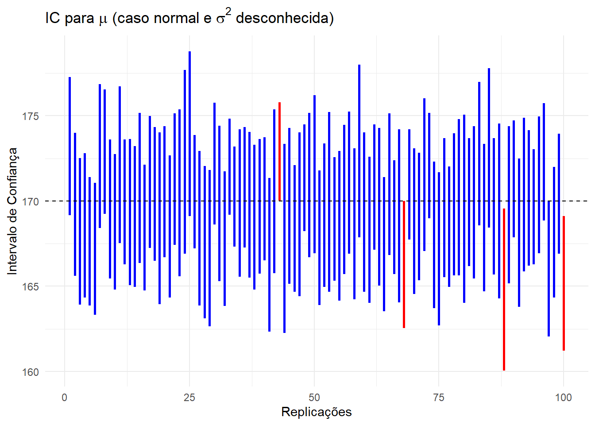
Assim, conseguimos, novamente, uma cobertura de 96% dos intervalos (próxima do valor verdadeiro de 95%). Essa cobertura vai se aproximando cada vez mais do valor de 95% à medida que aumentamos o valor de \(B\).
4.3.2 Exercício: impacto do tamanho do nível de confiança
Retorne ao exemplo anterior e troque o nível de confiança de 95% para 80%. Compare os dois gráficos. O que você nota de diferente?
4.4 Média Populacional (caso amostras grandes)
Vamos estudar a construção do intervalo de confiança para a média populacional \(\mu\), assumindo que:
- Os dados vêm de uma população com distribuição qualquer, com média \(\mu\) e variância \(\sigma^2\);
- A variância populacional \(\sigma^2\) é desconhecida;
- A amostra \(X_1, X_2, …, X_n\) é aleatória e de tamanho \(n\).
Como a variância populacional é desconhecida, usamos a variância amostral \(s^2\) para estimar \(\sigma^2\). Além disso, como n é grande, podemos aplicar o Teorema Central do Limite para afirmar que a média amostral \(\bar{X}\) é aproximadamente normal:
\[ \bar{X} \sim N(\mu, \sigma^2/n) \]
Substituindo \(\sigma\) por \(s\), a estatística
\[ Z \sim \frac{\bar{X} - \mu}{s/\sqrt{n}} \]
pode ser aproximada por uma distribuição normal padrão \(N(0,1)\), quando \(n\) é grande. Assim, o intervalo de confiança para \(\mu\), com nível de confiança \(1 − \alpha\), é dado por:
\[ IC_{1 - \alpha}(\mu) = \left[ \bar{X} - z_{\alpha/2} \frac{s}{\sqrt{n}}, \; \bar{X} + z_{\alpha/2} \frac{s}{\sqrt{n}} \right] \]
Note que usamos o quantil \(z_{\alpha/2}\) da normal padrão, e não o \(t\), porque a aproximação normal é válida para amostras grandes, mesmo com variância desconhecida. A interpretação permanece: se repetíssemos o processo de amostragem muitas vezes, aproximadamente \(100 \cdot (1 − \alpha)\)% dos intervalos construídos conteriam o verdadeiro valor de \(\mu\).
Na próxima etapa, vamos investigar computacionalmente como esse intervalo se comporta na prática, verificando sua frequência de acerto para diferentes distribuições populacionais e tamanhos amostrais.
4.4.1 Exercício
Considere que \(X_1, X_2, ..., X_n\) seja uma amostra aleatória de uma população com distribuição Exponencial com parâmetro \(\lambda\). Considerando \(n=48\) e \(\lambda=6\), faça, em sequência:
1- Gere \(B=100\) amostras de tamanho \(n=48\) dessa população e, para cada amostra, obtenha o intervalo com 90% de confiança para a média populacional \(\mu\).
2- Faça o gráfico da cobertura dos intervalos gerados e calcule a porcentagem de cobertura.
3- Altere o valor do nível de confiança para 80% e veja o que muda no gráfico.
4- Altere o valor o tamanho da amostra para \(n=100\) e veja o que muda no gráfico.
4.5 Proporção Populacional
Vamos estudar a construção do intervalo de confiança para a proporção populacional \(p\), assumindo que:
- Os dados vêm de uma variável aleatória binária (por exemplo, sucesso/falha) com proporção de sucessos \(p\);
- A amostra \(X_1, X_2, …, X_n\) é aleatória e de tamanho \(n\);
- A proporção populacional \(p\) é desconhecida, e será estimada pela proporção amostral \(\hat{p}\).
Como \(n\) é grande, podemos aplicar o Teorema Central do Limite para afirmar que a proporção amostral \(\hat{p}\) é aproximadamente normal:
\[ \hat{p} \sim N\left(p, \frac{p(1-p)}{n}\right) \]
Como \(p\) é desconhecido, substituímos pela estimativa \(\hat{p}\), obtendo a estatística:
\[ Z = \frac{\hat{p} - p}{\sqrt{\hat{p}(1-\hat{p})/n}} \sim N(0,1) \]
que pode ser aproximada por uma distribuição normal padrão \(N(0,1)\). Essa aproximação acontece, principalmente, se:
\[ n\hat{p} \geq 5 \quad \text{e} \quad n(1-\hat{p}) \geq 5 \]
Assim, o intervalo de confiança para \(p\), com nível de confiança \(1 − \alpha\), é dado por:
\[ IC_{1 - \alpha}(p) = \left[ \hat{p} - z_{\alpha/2} \sqrt{\frac{\hat{p}(1-\hat{p})}{n}}, \; \hat{p} + z_{\alpha/2} \sqrt{\frac{\hat{p}(1-\hat{p})}{n}} \right] \]
Esse intervalo é conhecido como intervalo de Wald. Ele é simples de calcular, mas pode ter desempenho ruim quando a proporção está muito próxima de 0 ou 1, ou quando o tamanho amostral é pequeno. Por isso, a importância das condições acima. A interpretação permanece: se repetíssemos o processo de amostragem muitas vezes, aproximadamente \(100 \cdot (1− \alpha)\)% dos intervalos construídos conteriam o verdadeiro valor de \(p\).
Na próxima etapa, vamos investigar computacionalmente como esse intervalo se comporta na prática, verificando sua frequência de acerto para diferentes valores de \(p\) e tamanhos amostrais.
4.5.1 Exercício
Considere que \(X_1, X_2, …, X_n\) seja uma amostra aleatória de uma população com distribuição Bernouli com parâmetro \(p\). Considerando \(n=64\) e \(p=0.6\), faça, em sequência:
1- Gere \(B=100\) amostras de tamanho \(n=64\) dessa população e, para cada amostra, obtenha o intervalo com 95% de confiança para a proporção populacional \(p\).
2- Faça o gráfico da cobertura dos intervalos gerados e calcule a porcentagem de cobertura.
3- Altere o valor de \(p\) para \(p=0.9\) e observe o que muda.
4.6 Variância Populacional (caso normal)
Vamos estudar a construção do intervalo de confiança para a variância populacional \(\sigma^2\), assumindo que:
- Os dados vêm de uma população com distribuição normal \(N(\mu,\sigma^2)\);
- A amostra \(X_1, X_2, …, X_n\) é aleatória e de tamanho \(n\).
Como a população é assumida normal, temos uma distribuição exata para a estatística baseada na variância amostral \(S^2\):
\[ \frac{(n-1)S^2}{\sigma^2} \sim \chi^2(n-1) \]
Ou seja, a razão entre a soma dos quadrados centrados da amostra e a variância populacional segue uma distribuição qui-quadrado com \(n−1\) graus de liberdade.
Para construir um intervalo de confiança bilateral com nível de confiança \(1−\alpha\) (por exemplo, 95%), utilizamos os quantis \(χ^2_{n−1, α/2}\) e \(χ^2_{n−1,1−α/2}\) da distribuição chi-quadrado com \(n−1\) graus de liberdade. Veja na figura a seguir:
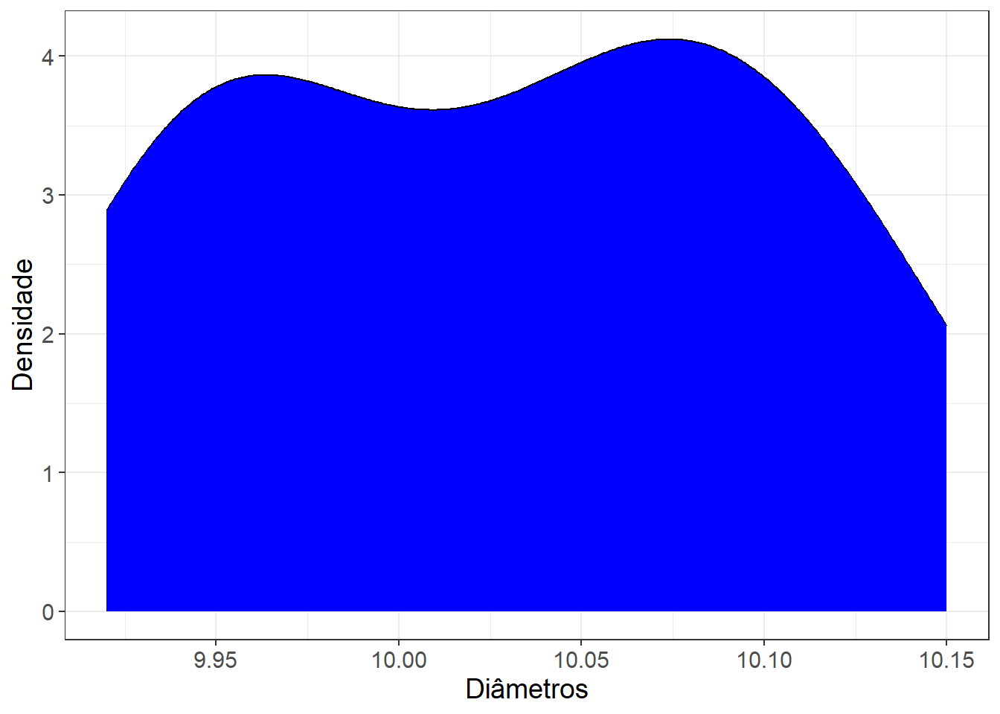
No R, esses valores críticos são obtidos da seguinte forma (para uma confiança de 95%, por exemplo):
# Tamanho da amostra
n = length(dados)
# Nível de confiança
conf = 0.95
# Nível de significância
alfa = 1-conf
# Valores críticos
x_critico1 = qchisq(alfa/2,df=n-1)
x_critico2 = qchisq(alfa/2,df=n-1,lower.tail=F)Com isso, podemos construir um intervalo de confiança para \(\sigma^2\), com nível de confiança \(1−\alpha\), utilizando os quantis da distribuição qui-quadrado:
\[ IC_{1 - \alpha}(\sigma^2) = \left[ \frac{(n-1)S^2}{\chi^2_{n-1, 1-\alpha/2}}, \; \frac{(n-1)S^2}{\chi^2_{n-1, \alpha/2}} \right] \]
Note que a ordem dos quantis é invertida, pois a distribuição qui-quadrado é assimétrica. A interpretação permanece: se repetíssemos o processo de amostragem muitas vezes, aproximadamente \(100⋅(1−\alpha)\)% dos intervalos construídos conteriam o verdadeiro valor de \(\alpha\).
Na próxima etapa, vamos investigar computacionalmente como esse intervalo se comporta na prática, verificando sua frequência de acerto para diferentes valores de \(\sigma^2\) e tamanhos amostrais.
4.6.1 Exercício
Considere que \(X_1, X_2, ..., X_n\) seja uma amostra aleatória de uma população com distribuição Normal com parâmetros \(\mu = 170\) e \(\sigma^2 = 100\). Considerando \(n=22\), faça, em sequência:
1- Gere \(B=100\) amostras de tamanho \(n=22\) dessa população e, para cada amostra, obtenha o intervalo com 95% de confiança para a variância populacional \(\sigma^2\). 2- Faça o gráfico da cobertura dos intervalos gerados e calcule a porcentagem de cobertura. 3- Altere o valor de \(\sigma^2\) para 25 e observe o que muda.
4.7 Testes de Hipótese
Diante da incerteza sobre o verdadeiro valor de um parâmetro populacional \(\beta\), como a média, proporção ou variância, o teste de hipóteses nos fornece uma estrutura formal para avaliar uma suposição sobre esse parâmetro com base em dados amostrais.
Começamos formulando duas hipóteses estatísticas mutuamente exclusivas:
- Hipótese nula (\(H_0\)): Representa a suposição inicial que queremos testar;
- Hipótese alternativa (\(H_a\)): Representa a suposição que queremos investigar, sugerindo uma diferença ou efeito. Pode ser unilateral (por exemplo, \(H_a: \beta > \beta_0\)) ou bilateral (por exemplo, \(H_a: \beta \neq \beta_0\)).
Com uma amostra aleatória \(X=(X_1, X_2, …, X_n)\), calculamos uma estatística de teste \(T(X)\), escolhida de forma que valores extremos de \(T(X)\) forneçam evidência contra \(H0\). Com base em \(T(X)\), definimos uma região crítica \(C\), tal que:
\[ \text{Rejeitamos} H_0 \text{ se } T(X) \in C \]
Essa decisão envolve incertezas, que podem ser quantificadas por dois tipos de erro:
- Erro tipo I (\(\alpha\)): Rejeitar \(H_0\) quando ela é verdadeira. A probabilidade desse erro é o nível de significância do teste.
\[ \alpha = P(T(X) \in C | H_0 \text{ é verdadeira}) \]
- Erro tipo II (\(\beta\)): Não rejeitar \(H_0\) quando \(H_1\) é verdadeira. A probabilidade desse erro depende do verdadeiro valor do parâmetro sob \(H_a\).
\[ \beta = P(T(X) \notin C | H_1 \text{ é verdadeira}) \]
- Poder do teste (\(1 - \beta\)): A probabilidade de corretamente rejeitar \(H_0\) quando \(H_1\) é verdadeira. Um teste poderoso tem um baixo valor de \(\beta\).
\[ 1 - \beta = P(T(X) \in C | H_1 \text{ é verdadeira}) \]
Uma forma amplamente utilizada para tomar a decisão sobre rejeitar ou não \(H0\) é por meio do p-valor, que representa a probabilidade de observarmos um valor tão extremo quanto o valor observado da estatística de teste, sob a suposição de que \(H0\) é verdadeira. Assim:
- Calculamos o p-valor com base na estatística de teste observada;
- Comparamos o p-valor com o nível de significância \(\alpha\);
- Rejeitamos \(H0\) se o p-valor for menor ou igual a \(\alpha\);
Com o apoio de ferramentas computacionais, é possível simular o comportamento da estatística de teste sob diferentes cenários, o que permite investigar de forma prática as probabilidades dos erros tipo I e tipo II, avaliar o poder do teste e explorar o efeito de diferentes hipóteses alternativas.
4.8 Média Populacional (caso normal com variância conhecida)
Vamos começar estudando a construção de testes de hipóteses para a média populacional \(\mu\), assumindo que:
- Os dados vêm de uma população com distribuição normal \(N(\mu,\sigma^2)\);
- A variância populacional \(\sigma^2\) é conhecida;
- A amostra \(X_1, X_2, …, X_n\) é aleatória e de tamanho \(n\).
4.8.1 Teste Bilateral
O teste bilateral verifica se a média populacional é igual a um valor específico \(\mu_0\) ou diferente, para mais ou para menos.
\[ \begin{align*} H_0 &: \mu = \mu_0 \text{hipótese nula} \\ H_1 &: \mu \neq \mu_0 \text{hipótese alternativa} \]
A estatística de teste usada é a média amostral
\[ \bar{X} = \frac{1}{n} \sum_{i=1}^{n} X_i \]
Sabemos que:
\[ \bar{X} \sim N(\mu, \sigma^2/n) \]
Sob \(H_0\):
\[ \bar{X} \sim N(\mu_0, \sigma^2/n) \]
O nível de significância é \(\alpha\). No teste bilateral, rejeitamos \(H_0\) se a média amostral estiver muito distante de \(\mu_0\):
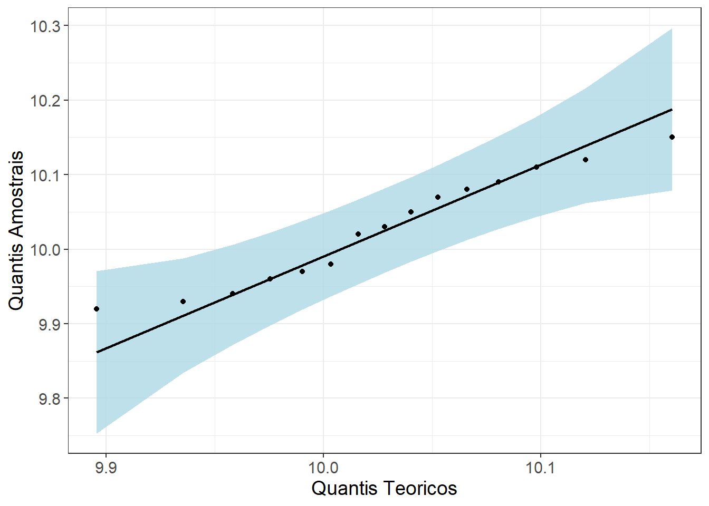
Isto é,
\[ \text{Rejeitamos} H_0 \text{ se } |\bar{X} - \mu_0| > z_{\alpha/2} \frac{\sigma}{\sqrt{n}} \]
Queremos determinar os valores \(L\) e \(U\) que satisfazem:
\[ P(\bar{X} \leq L | H_0) = \frac{\alpha}{2} \quad \text{e} \quad P(\bar{X} \geq U | H_0) = \frac{\alpha}{2} \]
Sabemos que:
\[ P(\bar{X} \leq L | H_0) = \frac{\alpha}{2} \to \frac{L-\mu_0}{\sigma/\sqrt{n}} = -z_{\alpha/2} \to L = \mu_0 - z_{\alpha/2} \frac{\sigma}{\sqrt{n}} \]
e
\[ P(\bar{X} \geq U | H_0) = \frac{\alpha}{2} \to \frac{U-\mu_0}{\sigma/\sqrt{n}} = z_{\alpha/2} \to U = \mu_0 + z_{\alpha/2} \frac{\sigma}{\sqrt{n}} \]
Portanto, rejeitamos \(H_0\) se:
\[ \bar{X} \leq L = \mu_0 - z_{\alpha/2} \frac{\sigma}{\sqrt{n}} \quad \text{ou} \quad \bar{X} \geq U = \mu_0 + z_{\alpha/2} \frac{\sigma}{\sqrt{n}} \]
Exemplo:
Considere que \(X_1, X_2, …, X_n\) seja uma amostra aleatória de tamanho \(n=16\) de uma população com distribuição Normal com parâmetros \(\mu\) e \(\sigma^2\), com \(\sigma^2=100\). Considere o teste das seguintes hipóteses:
\[ \begin{align*} H_0 &: \mu = 170 \text{hipótese nula} \\ H_1 &: \mu \neq 170 \text{hipótese alternativa} \end{align*} \]
Considerando um \(\alpha\) de 5%, temos a seguinte região crítica:
\[ L = \mu_0 - z_{\alpha/2} \frac{\sigma}{\sqrt{n}} = 170 - 1.96 \cdot \frac{10}{4} = 165.1 \]
e
\[ U = \mu_0 + z_{\alpha/2} \frac{\sigma}{\sqrt{n}} = 170 + 1.96 \cdot \frac{10}{4} = 174.9 \]
Portanto, rejeitamos \(H_0\) se \(\bar{X} \leq 165.1\) ou \(\bar{X} \geq 174.9\).
De acordo com \(\alpha\), vamos simular \(B=1000\) amostras de tamanho \(n=16\) de uma população com \(\mu = 170\) e \(\sigma^2 = 100\) e, para cada amostra, vamos testar as hipóteses acima utilizando o método da região crítica com um nível \(\alpha = 5%\), assumindo \(\sigma^2\) conhecido. Note que, em todas as réplicas, teremos a mesma região crítica. O objetivo é verificar se em aproximadamente 5% dessas amostras rejeitamos a hipótese nula, quando sabemos que, na verdade, ela é verdadeira (eerro do tipo I). Dessa forma, o nosso objetivo é estimar, empiricamente, o nível \(\alpha\):
# Parâmetros populacionais de X
media_real <- 170
sigma_real <- 10
# Tamanho da amostra
n <- 16
# Número de réplicas (simulações)
B <- 1000
# Nível de significância
alfa <- 0.05
# Simulação das médias amostrais
set.seed(2025)
medias <- replicate(B, mean(rnorm(n, media_real, sigma_real)))
# Z crítico
z_critico <- qnorm(alfa/2,lower.tail=F)
# valores criticos de xbarra
L <- media_real-z_critico*sigma_real/sqrt(n)
U <- media_real+z_critico*sigma_real/sqrt(n)
# Cria um data frame com os valores das medias e decisão do teste
df <- data.frame(medias = medias) %>%
mutate(rejeita_H0 = medias >= U | medias <= L )
# Porcentagem de testes que rejeitaram a hipótese nula
rejeicao = mean(df$rejeita_H0)
# Gráfico
ggplot(df, aes(x = medias, fill = rejeita_H0)) +
geom_histogram(color = "black") +
scale_fill_manual(values = c("FALSE" = "skyblue", "TRUE" = "tomato"),
labels = c("Não rejeita H0", "Rejeita H0"),
name = "Decisão") +
labs(title = "Distribuição das médias amostrais",
x = "Médias Amostrais",
y = "Frequência") +
theme_minimal()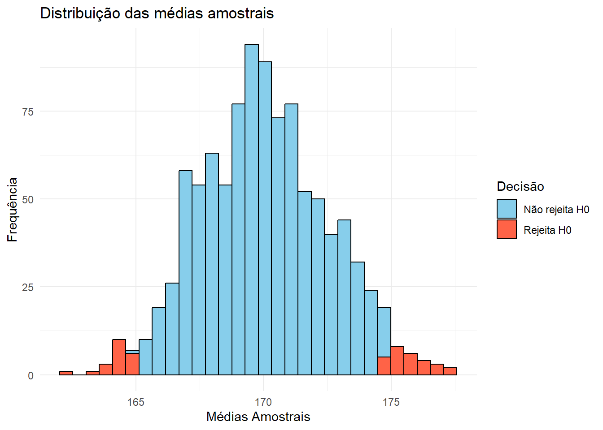
Esse gráfico representa a distribuição empírica dos B valores de \(\bar{X}\). A quantidade empírica de testes que rejeitaram a hipótese nula é aproximadamente 5%, o nível de significância.
4.8.2 Teste Unilateral À Direita
O teste unilateral à direita verifica se a média populacional é maior que um valor específico \(\mu_0\):
\[ \begin{align*} H_0 &: \mu \leq \mu_0 \text{ (hipótese nula)} \\ H_1 &: \mu > \mu_0 \text{ (hipótese alternativa)} \end{align*} \]
A estatística de teste utilizada é a média amostral:
\[ \bar{X} = \frac{1}{n} \sum_{i=1}^{n} X_i \]
Sabemos que:
\[ \bar{X} \sim N(\mu, \sigma^2/n) \]
Sob \(H_0\):
\[ \bar{X} \sim N(\mu_0, \sigma^2/n) \]
O nível de significância é \(\alpha\). No teste unilateral à direita, rejeitamos \(H_0\) se a média amostral estiver muito maior que \(\mu_0\):
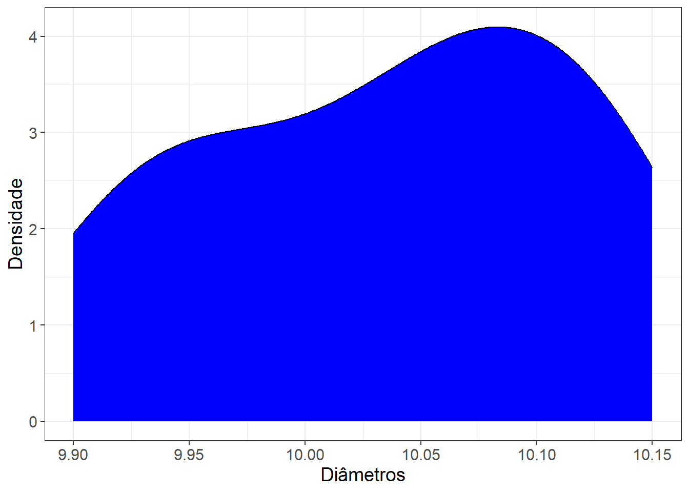
Isto é,
\[ \text{Rejeitamos } H_0 \text{ se } \bar{X} > U \]
Queremos determinar o valor \(U\) tal que:
\[ P(\bar{X} \geq U | H_0) = \alpha \]
Sabemos que:
\[ P(\bar{X} \geq U | H_0) = \alpha \to \frac{U-\mu_0}{\sigma/\sqrt{n}} = z_{\alpha} \to U = \mu_0 + z_{\alpha} \frac{\sigma}{\sqrt{n}} \]
Portanto, rejeitamos \(H_0\) se:
\[ \bar{X} \geq U = \mu_0 + z_{\alpha} \frac{\sigma}{\sqrt{n}} \]
Exercício:
Considere que \(X_1, X_2, …, X_n\) seja uma amostra aleatória de tamanho n=16 de uma população com distribuição Normal com parâmetros \(\mu\) e \(\sigma^2\), com \(\simga^2=100\). Considere o teste das seguintes hipóteses:
\[ \begin{align*} H_0 &: \mu \leq 170 \text{ (hipótese nula)} \\ H_1 &: \mu > 170 \text{ (hipótese alternativa)} \end{align*} \]
Considerando um \(\alpha\) de 5%, temos a seguinte região crítica:
\[ U = \mu_0 + z_{\alpha} \frac{\sigma}{\sqrt{n}} = 170 + 1.645 \cdot \frac{10}{4} = 174.1 \]
Portanto, rejeitamos \(H_0\) se \(\bar{X} \geq 174.1\).
Fixado o valor de \(\alpha=5%\), simule \(B=1000\) amostras de uma população normal \((\mu=170, \alpha2=100)\) e, para cada amostra, teste as hipóteses acima utilizando o método da regiao crítica com um nível \(\alpha=5%\), assumindo \(\sigma^2\) conhecido. Note que, em todas as réplicas, teremos a mesma região crítica. O objetivo é verificar se em aproximadamente 5% dessas amostras rejeitaremos a hipótese nula, quando sabemos que, na verdade, ela é verdadeira (erro do tipo I). Dessa forma, o nosso objetivo é estimar, empiricamente, o nível \(\alpha\).
4.8.3 ERRO TIPO II E PODER DO TESTE
Vamos investigar o comportamento do erro tipo II e do poder do teste no exemplo do teste bilateral. As hipóteses eram:
\[ \begin{align} H_0 : p = 0.6 \\ H_1 : p \neq 0.6 \end{align} \]
Com um tamanho de amostra \(n=100\) e considerando um α de \(5%\), obtivemos a seguinte região crítica:
\[ C = \hat{p} \leq 0.5039 \quad \text{ou} \quad \hat{p} \geq U = 0.6960 \]
Dessa forma, o erro tipo II será dado por:
\[ \beta = P(\hat{p} \notin C | H_1 \text{verdadeira}) = P(0.5039 < \hat{p} < 0.6960 | p \neq p_a) \]
Consequentemente, o poder do teste será dado por:
\[ 1 - \beta = P(\hat{p} \in C | H_1 \text{verdadeira}) = P(\hat{p} \leq 0.5039 \cup \hat{p} \geq 0.6960 | p \neq p_a) \]
Para que \(H1\) seja verdadeira, nesse caso, poderemos considerar que a proporção verdadeira p assuma diferentes valores de \(0.6\). Denote por \(p_1\) estes valores sob a hipótese alternativa. Segue, o código para a obtenção do erro tipo \(II\) e do poder do teste, considerando os valores de n tamanho amostral, \(\alpha\) o nível de significância, \(p_0\) a proporção sob a hipótese nula e \(p_1\) a proporção sob a hipótese alternativa:
ErroTipoII = function(n, sigma_real, alfa, mu0, mu1){
# Calcula o valor crítico para teste bilateral
z_critico = qnorm(alfa / 2, lower.tail = FALSE)
# Define os limites da região crítica
L = mu0 - z_critico * sigma_real / sqrt(n)
U = mu0 + z_critico * sigma_real / sqrt(n)
# Calcula o erro tipo II: probabilidade de não rejeitar H0 quando mu = mu1
Beta = pnorm(U, mean = mu1, sd = sigma_real / sqrt(n)) -
pnorm(L, mean = mu1, sd = sigma_real / sqrt(n))
return(Beta)
}
PoderDoTeste = function(n, sigma_real, alfa, mu0, mu1){
1 - ErroTipoII(n, sigma_real, alfa, mu0, mu1)
}Vamos avaliar ambas as funções graficamente, considerando \(n=16\), \(σ=10\), \(μ0=170\) e \(α=5%\), variando diversos valores possíveis para μ1:
# Parâmetros fixos
n <- 16
alfa <- 0.05
mu0 <- 170
sigma_real <- 10
# Variação de mu1
mu1_vals <- seq(150, 190, by = 1)
# Erro do tipo II
betas <- ErroTipoII(n=n, sigma_real=sigma_real, alfa=alfa,
mu0=mu0, mu1=mu1_vals)
# Poder do teste
poderes <- PoderDoTeste(n=n, sigma_real=sigma_real, alfa=alfa,
mu0=mu0, mu1=mu1_vals)
# Data frame para plotagem
dados <- data.frame(mu1 = mu1_vals,
betas = betas,
poderes = poderes)
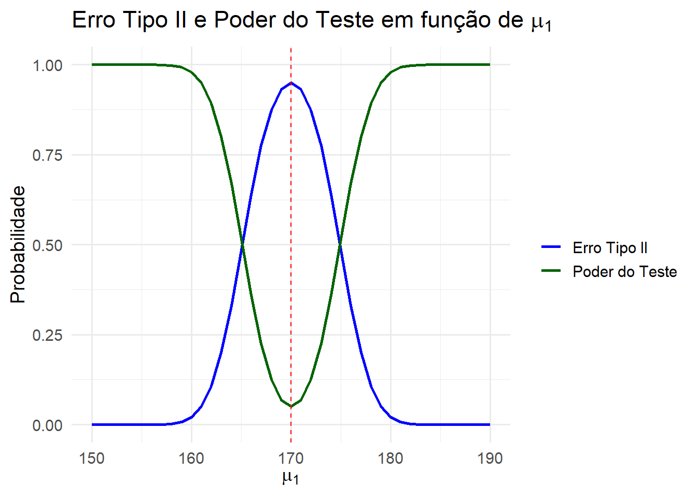
Este gráfico apresenta a probabilidade do erro tipo \(II\) (linha azul) e o poder do teste (linha verde) em função de diferentes valores da média alternativa \(μ_1\)
, ou seja, assume que o teste é para:
\[ H_0 : \mu = 170 \quad \text{versus} \quad H_1 : \mu \neq 170 \]
No eixo x, temos os possíveis valores alternativos de \(μ_1\), variando entre 150 e 190.
No eixo y, temos as probabilidades:
A linha vermelha vertical tracejada indica \(μ_1\)=\(μ_0\)=170. Neste ponto:
- O erro tipo II atinge seu valor máximo=0.95 (nível de confiança)
- O poder do teste é 0.05, como esperado, pois é o nível de significância.
À medida que \(μ_1\) se afasta de 170 (para cima ou para baixo), a:
- Probabilidade de erro tipo II diminui, porque fica mais fácil perceber a diferença entre \(μ_1\) e \(μ_0\),
- O poder do teste aumenta, pois se torna mais provável rejeitar corretamente \(H_0\).
Em \(μ_1\) muito distantes (como abaixo de 160 ou acima de 180), o poder do teste se aproxima de 1, e o erro tipo \(II\) tende a 0. Isso significa que o teste é muito eficaz para detectar diferenças grandes. O gráfico mostra como a eficácia do teste depende da verdadeira média populacional \(μ_1\).
4.8.3.1 Exercício:
Vamos investigar o comportamento do erro tipo \(II\) e do poder do teste no exemplo do teste unilateral à direita. As hipóteses eram:
\[ \begin{align} H0:μ=170 \\ H1:μ>170 \end{align} \]
Com um tamanho de amostra \(n=16\), \(σ=10\) e considerando um \(\alpha\)
de 5%, obtivemos a seguinte região crítica:
\[ C= \bar{X} \geq 174,1 \]
Dessa forma, o erro tipo II será dado por:
\[ β= P(\bar{X} \notin C∣ \text{H1 verdadeira}) = P(\bar{X} ≤ 174,1|μ≠170) \]
Consequentemente, o poder do teste será dado por:
\[ 1−β=P(\bar{X} ∈C∣ \text{H1 verdadeira})=P(\bar{X}≥174,1|μ≠170) \]
Para que H1 seja verdadeira, nesse caso, poderemos considerar que a média verdadeira \(\mu\) assuma valores acima de 170. Denote por \(\mu_1\) estes valores sob a hipótese alternativa.
1- Faça o código para a obtenção do erro tipo II e do poder do teste, considerando os valores de n tamanho amostral, \(σ\) o desvio padrão populacional, \(α\) o nível de significância, \(μ_0\) a média sob a hipótese nula e \(μ_1\) a média sob a hipótese alternativa
2- Avalie ambas as funções graficamente, considerando \(n=16\), \(σ=10\), \(μ0=170\) e \(α=5%\), variando diversos valores possíveis para \(μ_1\), de acordo com a hipótese alternativa.
4.9 Proporção Populacional
Agora vamos para o estudo da construção de testes de hipóteses para a proporção populacional \(p\), assumindo que:
- Os dados vêm de uma população com distribuição Bernoulli (p);
- A amostra \(X_1,X_2, \cdots ,X_n\) aleatória e de tamanho \(n\) grande é selecionada dessa população.
4.9.1 Teste Bilateral
O teste bilateral verifica se a proporção populacional é igual a um valor específico \(p_0\) ou diferente, para mais ou para menos.
\[ \begin{align} H_0 &: p = p_0 \quad \text{(hipótese nula)} \\ H_1 &: p \neq p_0 \quad \text{(hipótese alternativa)} \end{align} \]
A estatística de teste usada é a proporção amostral
\[ \hat{p} = \frac{1}{n} \sum_{i=1}^{n} X_i \]
Sabemos que (segundo o TCL):
\[ \hat{p} \sim N\left(p, \frac{p(1-p)}{n}\right) \]
Sob \(H_0\):
\[ \hat{p} \sim N\left(p_0, \frac{p_0(1-p_0)}{n}\right) \]
O nível de significância é \(\alpha\). No teste bilateral, rejeitamos \(H_0\) se a proporção amostral estiver muito distante de \(p_0\):
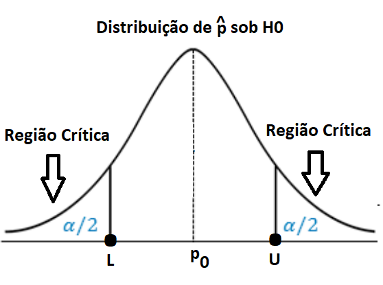
Isto é,
\[ \text{Rejeitamos } H_0 \text{ se } |\hat{p} - p_0| > z_{\alpha/2} \sqrt{\frac{p_0(1-p_0)}{n}} \]
Queremos determinar os valores \(L\) e \(U\) que satisfazem:
\[ P(\hat{p} \leq L | H_0) = \frac{\alpha}{2} \quad \text{e} \quad P(\hat{p} \geq U | H_0) = \frac{\alpha}{2} \]
Sabemos que:
\[ P(\hat{p} \leq L | H_0) = \frac{\alpha}{2} \to \frac{L-p_0}{\sqrt{p_0(1-p_0)/n}} = -z_{\alpha/2} \to L = p_0 - z_{\alpha/2} \sqrt{\frac{p_0(1-p_0)}{n}} \]
e
\[ P(\hat{p} \geq U | H_0) = \frac{\alpha}{2} \to \frac{U-p_0}{\sqrt{p_0(1-p_0)/n}} = z_{\alpha/2} \to U = p_0 + z_{\alpha/2} \sqrt{\frac{p_0(1-p_0)}{n}} \]
Portanto, rejeitamos \(H_0\) se:
\[ \hat{p} \leq L = p_0 - z_{\alpha/2} \sqrt{\frac{p_0(1-p_0)}{n}} \quad \text{ou} \quad \hat{p} \geq U = p_0 + z_{\alpha/2} \sqrt{\frac{p_0(1-p_0)}{n}} \]
Exemplo:
Considere que \(X_1, X_2, …, X_n\) seja uma amostra aleatória de tamanho \(n=100\) de uma população com distribuição Bernoulli com parâmetro \(p\). Considere o teste das seguintes hipóteses:
\[ \begin{align} H_0 &: p = 0.6 \quad \text{(hipótese nula)} \\ H_1 &: p \neq 0.6 \quad \text{(hipótese alternativa)} \end{align} \]
Considerando um \(\alpha\) de 5%, temos a seguinte região crítica:
\[ L = p_0 - z_{\alpha/2} \sqrt{\frac{p_0(1-p_0)}{n}} = 0.6 - 1.96 \cdot \sqrt{\frac{0.6 \cdot 0.4}{100}} = 0.5039 \]
e
\[ U = p_0 + z_{\alpha/2} \sqrt{\frac{p_0(1-p_0)}{n}} = 0.6 + 1.96 \cdot \sqrt{\frac{0.6 \cdot 0.4}{100}} = 0.6960 \]
Portanto, rejeitamos \(H_0\) se \(\hat{p} \leq 0.5039\) ou \(\hat{p} \geq 0.6960\).
Fixado o valor de \(\alpha=5%\), simule \(B=1000\) amostras de uma população Bernoulli \((p=0.6)\) e, para cada amostra, teste as hipóteses acima utilizando o método da região crítica com um nível \(\alpha=5%\). Note que, em todas as réplicas, teremos a mesma região crítica. O objetivo é verificar se em aproximadamente 5% dessas amostras rejeitaremos a hipótese nula, quando sabemos que, na verdade, ela é verdadeira (erro do tipo I). Dessa forma, o nosso objetivo é estimar, empiricamente, o nível \(\alpha\).
# Parâmetros populacionais de X
p_real=0.6
# Tamanho da amostra
n <- 100
# Número de réplicas (simulações)
B <- 1000
# Nível de significância
alfa <- 0.05
# Simulação das médias amostrais
set.seed(2025)
props <- replicate(B, mean(rbinom(n, size=1,p=p_real)))
# Z crítico
z_critico <- qnorm(alfa/2,lower.tail=F)
# Desvio padrão
desvio_padrao <- sqrt((p_real*(1-p_real))/n)
# valores criticos de xbarra
L <- p_real-z_critico*desvio_padrao
U <- p_real+z_critico*desvio_padrao
# Cria um data frame com os valores das medias e decisão do teste
df <- data.frame(props = props) %>%
mutate(rejeita_H0 = props >= U | props <= L )
# Porcentagem de testes que rejeitaram a hipótese nula
rejeicao = mean(df$rejeita_H0)# Gráfico
ggplot(df, aes(x = props, fill = rejeita_H0)) +
geom_histogram(color = "black") +
scale_fill_manual(values = c("FALSE" = "skyblue", "TRUE" = "tomato"),
labels = c("Não rejeita H0", "Rejeita H0"),
name = "Decisão") +
labs(title = "Distribuição das médias amostrais",
x = "Médias Amostrais",
y = "Frequência") +
theme_minimal()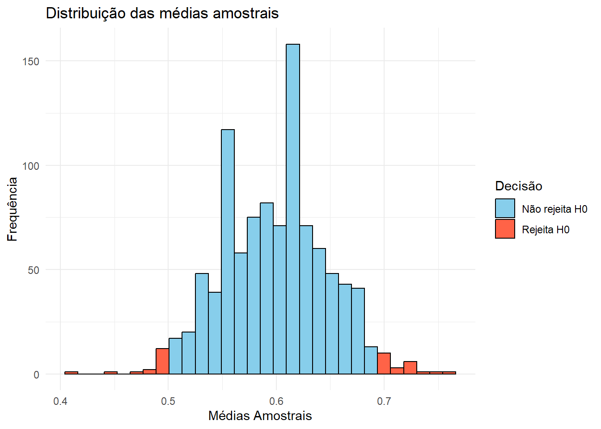
Esse gráfico representa a distribuição empírica dos \(B\) valores de \(\hat{p}\). A quantidade empírica de testes que rejeitaram a hipótese nula é próxima de 5%, o nível de significância.
4.9.2 Teste Unilateral À Direita
O teste unilateral à direita verifica se a proporção populacional é maior que um valor específico \(p_0\):
\[ \begin{align} H_0 &: p \leq p_0 \quad \text{(hipótese nula)} \\ H_1 &: p > p_0 \quad \text{(hipótese alternativa)} \end{align} \]
A estatística de teste utilizada é a proporção amostral:
\[ \hat{p} = \frac{1}{n} \sum_{i=1}^{n} X_i \]
Sabemos que (segundo o TCL):
\[ \hat{p} \sim N\left(p, \frac{p(1-p)}{n}\right) \]
Sob \(H_0\):
\[ \hat{p} \sim N\left(p_0, \frac{p_0(1-p_0)}{n}\right) \]
O nível de significância é \(\alpha\). No teste unilateral à direita, rejeitamos \(H_0\) se a proporção amostral estiver muito maior que \(p_0\):
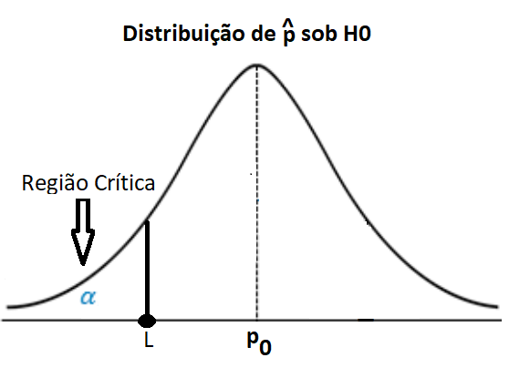
Isto é,
\[ \text{Rejeitamos } H_0 \text{ se } \hat{p} > L \]
Queremos determinar o valor de \(L\) que satisfaz:
\[ P(\hat{p} \geq L | H_0) = \alpha \]
Sabemos que:
\[ P(\hat{p} \geq L | H_0) = \alpha \to \frac{L-p_0}{\sqrt{p_0(1-p_0)/n}} = z_{\alpha} \to L = p_0 + z_{\alpha} \sqrt{\frac{p_0(1-p_0)}{n}} \]
Portanto, rejeitamos \(H_0\) se:
\[ \hat{p} \geq L = p_0 + z_{\alpha} \sqrt{\frac{p_0(1-p_0)}{n}} \]
Exercício:
Considere que \(X_1, X_2, …, X_n\) seja uma amostra aleatória de tamanho \(n=100\) de uma população com distribuição Bernoulli com parâmetro \(p\). Considere o teste das seguintes hipóteses:
\[ \begin{align} H_0 &: p \leq 0.6 \quad \text{(hipótese nula)} \\ H_1 &: p > 0.6 \quad \text{(hipótese alternativa)} \end{align} \]
Considerando um \(\alpha\) de 5%, temos a seguinte região crítica:
\[ L = p_0 + z_{\alpha} \sqrt{\frac{p_0(1-p_0)}{n}} = 0.6 + 1.645 \cdot \sqrt{\frac{0.6 \cdot 0.4}{100}} = 0.5197 \]
Portanto, rejeitamos \(H_0\) se \(\hat{p} \leq 0.5197\).
De acordo com α, vamos simular B=1000 amostras de tamanho n=100 de uma população Bernoulli (p=0.6) e, para cada amostra, vamos testar as hipóteses acima utilizando o método da região crítica com um nível α=5%. Note que, em todas as réplicas, teremos a mesma região crítica. O objetivo é verificar se em aproximadamente 5% dessas amostras rejeitamos a hipótese nula, quando sabemos que, na verdade, ela é verdadeira (eerro do tipo I). Dessa forma, o nosso objetivo é estimar, empiricamente, o nível α:
4.9.3 Erro Tipo II e Poder do Teste
Vamos investigar o comportamento do erro tipo II e do poder do teste no exemplo do teste bilateral. As hipóteses eram:
\[ \begin{align} H_0 : p = 0.6 \\ H_1 : p \neq 0.6 \end{align} \]
Com um tamanho de amostra \(n=100\) e considerando um α de \(5%\), obtivemos a seguinte região crítica:
\[ C = \hat{p} \leq 0.5039 \quad \text{ou} \quad \hat{p} \geq U = 0.6960 \]
Dessa forma, o erro tipo II será dado por:
\[ \beta = P(\hat{p} \notin C | H_1 \text{verdadeira}) = P(0.5039 < \hat{p} < 0.6960 | p \neq p_a) \]
Consequentemente, o poder do teste será dado por:
\[ 1 - \beta = P(\hat{p} \in C | H_1 \text{verdadeira}) = P(\hat{p} \leq 0.5039 \cup \hat{p} \geq 0.6960 | p \neq p_a) \]
Para que \(H1\) seja verdadeira, nesse caso, poderemos considerar que a proporção verdadeira p assuma diferentes valores de \(0.6\). Denote por \(p_1\) estes valores sob a hipótese alternativa. Segue, o código para a obtenção do erro tipo \(II\) e do poder do teste, considerando os valores de n tamanho amostral, \(\alpha\) o nível de significância, \(p_0\) a proporção sob a hipótese nula e \(p_1\) a proporção sob a hipótese alternativa:
ErroTipoII = function(n, alfa, p0, p1){
# Calcula o valor crítico para teste bilateral
z_critico = qnorm(alfa / 2, lower.tail = FALSE)
# Define os limites da região crítica
L = p0 - z_critico * sqrt((p0*(1-p0))) / sqrt(n)
U = p0 + z_critico * sqrt((p0*(1-p0))) / sqrt(n)
# Calcula o erro tipo II: probabilidade de não rejeitar H0 quando mu = mu1
Beta = pnorm(U, mean = p1, sd = sqrt((p1*(1-p1))) / sqrt(n)) -
pnorm(L, mean = p1, sd = sqrt((p1*(1-p1))) / sqrt(n))
return(Beta)
}
PoderDoTeste = function(n, alfa, p0, p1){
1 - ErroTipoII(n, alfa, p0, p1)
}Vamos avaliar ambas as funções graficamente, considerando \(n=100\), \(p0=0.6\) e \(α=5%\), variando diversos valores possíveis para \(p_1\):
# Parâmetros fixos
n <- 100
alfa <- 0.05
p0 <- 0.6
# Variação de mu1
p1_vals <- seq(0.3, 0.9, by = 0.05)
# Erro do tipo II
betas <- ErroTipoII(n=n, alfa=alfa,
p0=p0, p1=p1_vals)
# Poder do teste
poderes <- PoderDoTeste(n=n, alfa=alfa,
p0=p0, p1=p1_vals)
# Data frame para plotagem
dados <- data.frame(p1 = p1_vals,
betas = betas,
poderes = poderes)# Gráfico com as duas linhas
ggplot(dados, aes(x = p1)) +
geom_line(aes(y = betas, color = "Erro Tipo II"), size = 1) +
geom_line(aes(y = poderes, color = "Poder do Teste"), size = 1) +
geom_vline(xintercept = p0, linetype = "dashed", color = "red") +
scale_color_manual(values = c("Erro Tipo II" = "blue", "Poder do Teste" = "darkgreen")) +
labs(
title = expression("Erro Tipo II e Poder do Teste em função de " * p[1]),
x = expression(p[1]),
y = "Probabilidade",
color = ""
) +
theme_minimal(base_size = 14)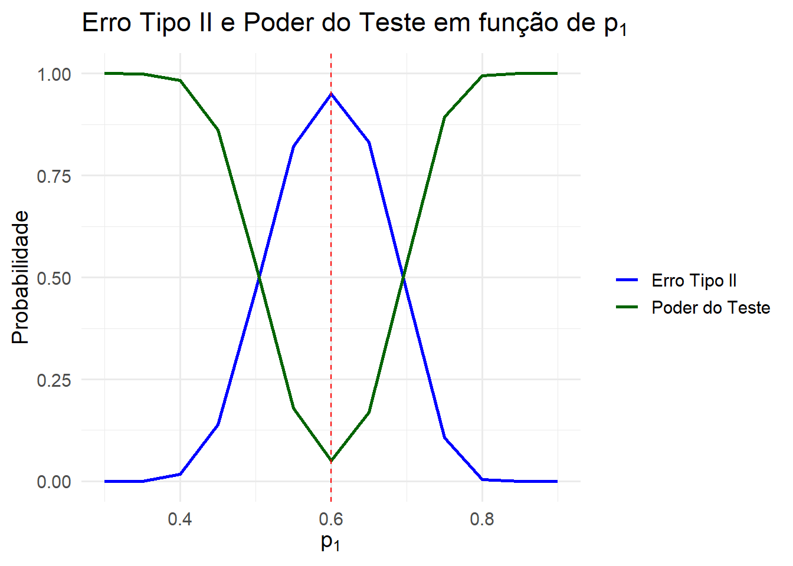
Este gráfico apresenta a probabilidade do erro tipo II (linha azul) e o poder do teste (linha verde) em função de diferentes valores da média alternativa \(p_1\), ou seja, assume que o teste é para:
4.10 Média Populacional (caso amostral grande)
Agora vamos para o estudo da construção de testes de hipóteses para a média populacional \(\mu\), assumindo que:
- Os dados vêm de qualquer distribuição
- A amostra \(X_1, X_2, …, X_n\) é aleatória e de tamanho \(n\) grande.
4.10.1 Teste Bilateral
O teste bilateral verifica se a média populacional é igual a um valor específico \(\mu_0\) ou diferente, para mais ou para menos.
\[ \begin{align} H_0 &: \mu = \mu_0 \text{hipótese nula} \\ H_1 &: \mu \neq \mu_0 \text{hipótese alternativa} \end{align} \]
A estatística de teste usada é a média amostral
\[ \bar{X} = \frac{1}{n} \sum_{i=1}^{n} X_i \]
Sabemos que (segundo o TCL):
\[ \bar{X} \sim N(\mu, \sigma^2/n) \]
Sob \(H_0\):
\[ \bar{X} \sim N(\mu_0, \sigma^2/n) \]
O nível de significância é \(\alpha\). No teste bilateral, rejeitamos \(H_0\) se a média amostral estiver muito distante de \(\mu_0\):
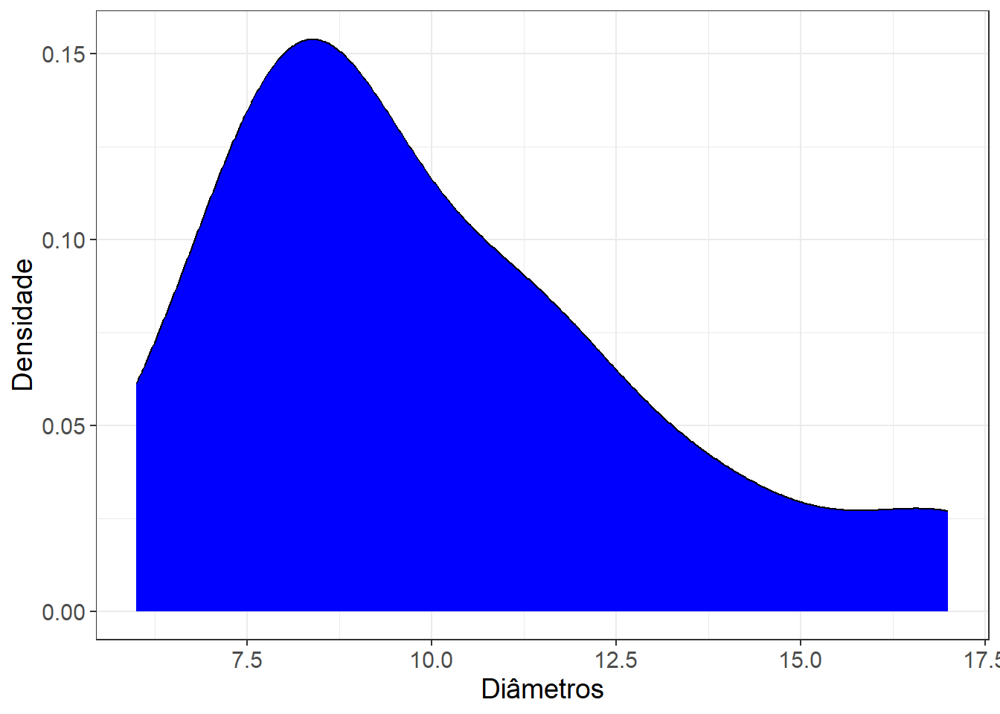
Isto é,
\[ \text{Rejeitamos } H_0 \text{ se } |\bar{X} - \mu_0| > z_{\alpha/2} \frac{\sigma}{\sqrt{n}} \]
Queremos determinar os valores \(L\) e \(U\) que satisfazem:
\[ P(\bar{X} \leq L | H_0) = \frac{\alpha}{2} \quad \text{e} \quad P(\bar{X} \geq U | H_0) = \frac{\alpha}{2} \]
Como não conhecemos o valor verdadeiro de \(\sigma\), o estimaremos pelo desvio padrão amostral \(s\). Sabemos que:
\[ P(\bar{X} \leq L | H_0) = \frac{\alpha}{2} \to \frac{L-\mu_0}{\sigma/\sqrt{n}} = -z_{\alpha/2} \to L = \mu_0 - z_{\alpha/2} \frac{\sigma}{\sqrt{n}} \]
e
\[ P(\bar{X} \geq U | H_0) = \frac{\alpha}{2} \to \frac{U-\mu_0}{\sigma/\sqrt{n}} = z_{\alpha/2} \to U = \mu_0 + z_{\alpha/2} \frac{\sigma}{\sqrt{n}} \]
Portanto, rejeitamos \(H_0\) se:
\[ \bar{X} \leq L = \mu_0 - z_{\alpha/2} \frac{\sigma}{\sqrt{n}} \quad \text{ou} \quad \bar{X} \geq U = \mu_0 + z_{\alpha/2} \frac{\sigma}{\sqrt{n}} \]
Exemplo:
Considere que \(X_1,X_2,\cdot,X_n\) seja uma amostra aleatória de tamanho \(n=64\) de de uma população com distribuição Exponencial com parâmetros \(\mu = 6\). Assim, \(mu=\frac{1}{6}\). Considere o teste das seguintes hipóteses:
\[ \begin{align} H_0 &: \mu = \frac{1}{6} \text{hipótese nula} \\ H_1 &: \mu \neq \frac{1}{6} \text{ hipótese alternativa} \end{align} \]
Diferentemente do caso anterior, não conseguimos expressar a região crítica sem os dados da amostra, uma vez que ela depende de \(s\), o desvio padrão amostral. Considerando um \(\alpha\) de 5%, em cada amostra de tamanho \(n=64\) os valores críticos para a construção da regiao de rejeição serão:
\[ L = \mu_0 - z_{\alpha/2} \frac{s}{\sqrt{n}} = \frac{1}{6} - 1.96 \cdot \frac{s}{8} \]
e
\[ U = \mu_0 + z_{\alpha/2} \frac{s}{\sqrt{n}} = \frac{1}{6} + 1.96 \cdot \frac{s}{8} \]
Vamos simular \(B=1000\) amostras dessa população e, para cada amostra, vamos testar as hipóteses acima utilizando o método da região crítica com um nível \(\alpha=5%\). Note que, em todas as réplicas, teremos diferentes regiões críticas, uma vez que o desvio padrão amostral \(s\) varia de amostra para amostra. O objetivo é verificar se em aproximadamente 5% dessas amostras rejeitamos a hipótese nula, quando sabemos que, na verdade, ela é verdadeira (erro do tipo I). Dessa forma, o nosso objetivo é estimar, empiricamente, o nível \(\alpha\).
# Parâmetros populacionais de X
lambda_real <- 6
media_real <- 1/lambda_real
# Tamanho da amostra
n <- 64
# Número de réplicas (simulações)
B <- 1000
# Nível de significância
alfa <- 0.05
# Simulação das médias amostrais
set.seed(2025)
medias <- replicate(B, mean(rexp(n, rate=lambda_real)))
# Simulação dos desvios padrões amostrais
set.seed(2025)
desvios_padroes <- replicate(B, sd(rexp(n, rate=lambda_real)))
# Z crítico
z_critico <- qnorm(alfa/2,lower.tail=F)
# valores criticos de xbarra
L <- media_real-z_critico*desvios_padroes /sqrt(n)
U <- media_real+z_critico*desvios_padroes /sqrt(n)
# Cria um data frame com os valores das medias e decisão do teste
df <- data.frame(medias = medias) %>%
mutate(rejeita_H0 = medias >= U | medias <= L )
# Porcentagem de testes que rejeitaram a hipótese nula
rejeicao = mean(df$rejeita_H0)
# Gráfico
ggplot(df, aes(x = medias, fill = rejeita_H0)) +
geom_histogram(color = "black", bins = 30) +
scale_fill_manual(values = c("FALSE" = "skyblue", "TRUE" = "tomato"),
labels = c("Não rejeita H0", "Rejeita H0"),
name = "Decisão") +
labs(title = "Distribuição das médias amostrais",
x = "Médias Amostrais",
y = "Frequência") +
theme_minimal()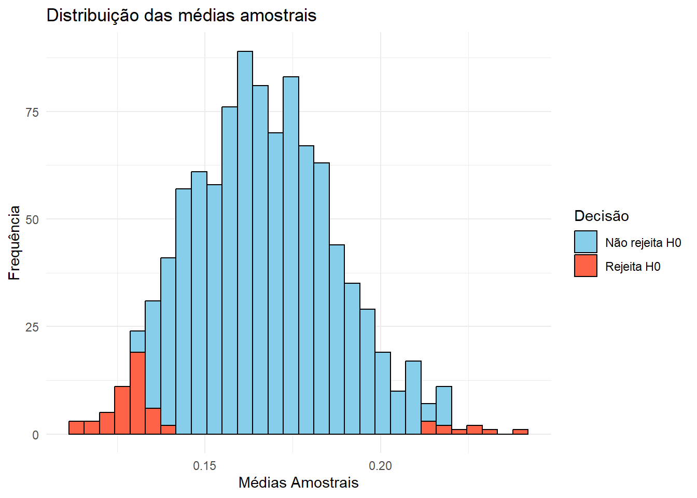
Esse gráfico representa a distribuição empírica dos \(B\) valores de \(\bar{X}\). A quantidade empírica de testes que rejeitaram a hipótese nula é aproximadamente 5%, o nível de significância.
4.10.2 Teste Unilateral À Direita
O teste unilateral à direita verifica se a média populacional é maior que um valor específico \(\mu_0\):
\[ \begin{align} H_0 &: \mu \leq \mu_0 \text{ (hipótese nula)} \\ H_1 &: \mu > \mu_0 \text{ (hipótese alternativa)} \end{align} \]
A estatística de teste utilizada é a média amostral:
\[ \bar{X} = \frac{1}{n} \sum_{i=1}^{n} X_i \]
Sabemos que (segundo o TCL):
\[ \bar{X} \sim N(\mu, \sigma^2/n) \]
Sob \(H_0\):
\[ \bar{X} \sim N(\mu_0, \sigma^2/n) \]
O nível de significância é \(\alpha\). No teste unilateral à direita, rejeitamos \(H_0\) se a média amostral estiver muito maior que \(\mu_0\):

Isto é,
\[ \text{Rejeitamos } H_0 \text{ se } \bar{X} \leq L \]
Queremos determinar o valor de \(L\) que satisfaz:
\[ P(\bar{X} \geq L | H_0) = \alpha \]
Sabemos que:
\[ \frac{L - \mu}{s/\sqrt{n}} = z_{\alpha} \to L = \mu_0 + z_{\alpha} \frac{\sigma}{\sqrt{n}} \]
Portanto, rejeitamos \(H_0\) se:
\[ \bar{X} \geq L = \mu_0 + z_{\alpha} \frac{\sigma}{\sqrt{n}} \]
Exercício:
Considere que \(X_1,X_2,\cdot,X_n\) seja uma amostra aleatória de tamanho \(n=64\) de de uma população com distribuição Exponencial com parâmetros \(\mu = 6\). Assim, \(mu=\frac{1}{6}\). Considere o teste das seguintes hipóteses:
\[ \begin{align} H_0 &: \mu \leq \frac{1}{6} \text{ (hipótese nula)} \\ H_1 &: \mu > \frac{1}{6} \text{ (hipótese alternativa)} \end{align} \]
Não conseguimos expressar a região crítica sem os dados da amostra, uma vez que ela depende de \(s\), o desvio padrão amostral. Considerando um α de 5%, em cada amostra de tamanho \(n=64\) os valores críticos para a construção da regiao de rejeição serão:
\[ L = \mu_0 + z_{\alpha} \frac{s}{\sqrt{n}} = \frac{1}{6} + 1.645 \cdot \frac{s}{8} \]
Vamos simular \(B=1000\) amostras dessa população e, para cada amostra, vamos testar as hipóteses acima utilizando o método da região crítica com um nível \(\alpha=5%\). Note que, em todas as réplicas, teremos diferentes regiões críticas, uma vez que o desvio padrão amostral \(s\) varia de amostra para amostra. O objetivo é verificar se em aproximadamente 5% dessas amostras rejeitamos a hipótese nula, quando sabemos que, na verdade, ela é verdadeira (erro do tipo I). Dessa forma, o nosso objetivo é estimar, empiricamente, o nível \(\alpha\).
4.11 Média Populacional (caso normal com variância populacional desconhecida)
Vamos construir testes de hipóteses para a média populacional \(\mu\), assumindo que:
- Os dados vêm de uma população com distribuição normal \(N(\mu, \sigma^2)\)
- A variância populacional \(\sigma^2\) é desconhecida
- A amostra \(X_1, X_2, …, X_n\) é aleatória e de tamanho \(n\) qualquer.
### Teste Bilateral
O teste bilateral verifica se a média populacional é igual a um valor específico \(\mu_0\) ou diferente:
\[ \begin{align} H_0 &: \mu = \mu_0 \quad \text{(hipótese nula)} \\ H_1 &: \mu \neq \mu_0 \quad \text{(hipótese alternativa)} \end{align} \]
Agora a estatística de teste utilizada é:
\[ \bar{X} = \frac{1}{n} \sum_{i=1}^{n} X_i \]
Sabemos que, usando o estimador da variância amostral \(S^2\), a estatística padronizada:
\[ T = \frac{\bar{X} - \mu}{S/\sqrt{n}} \]
segue uma distribuição t de Student com \(n-1\) graus de liberdade, sob \(H_0\). Da mesma forma como antes, o nível de significância é \(\alpha\). No teste bilateral, rejeitamos \(H_0\) se a média amostral estiver muito distante de \(\mu_0\):
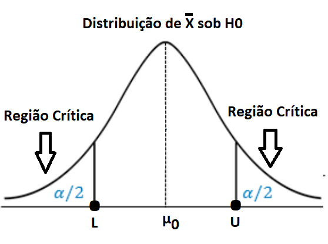
Isto é,
\[ \text{Rejeitamos } H_0 \text{ se } \bar{X} \leq \text{ ou } \bar{X} \geq S \]
Queremos determinar os valores \(L\) e \(S\) que satisfazem:
\[ P(\bar{X} \leq L | H_0) = \frac{\alpha}{2} \quad \text{e} \quad P(\bar{X} \geq U | H_0) = \frac{\alpha}{2} \]
Sabemos que:
\[ P(\bar{X} \leq L | H_0) = \frac{\alpha}{2} \to \frac{L-\mu_0}{S/\sqrt{n}} = -t_{\alpha/2,n-1} \to L = \mu_0 - t_{\alpha/2,n-1} \frac{S}{\sqrt{n}} \]
e
\[ P(\bar{X} \geq U | H_0) = \frac{\alpha}{2} \to \frac{U-\mu_0}{S/\sqrt{n}} = t_{\alpha/2,n-1} \to U = \mu_0 + t_{\alpha/2,n-1} \frac{S}{\sqrt{n}} \]
Portanto, rejeitamos \(H_0\) se:
\[ \bar{X} \leq L = \mu_0 - t_{\alpha/2,n-1} \frac{S}{\sqrt{n}} \quad \text{ou} \quad \bar{X} \geq U = \mu_0 + t_{\alpha/2,n-1} \frac{S}{\sqrt{n}} \]
Exemplo:
Considere que \(X_1,X_2,\cdot,X_n\) seja uma amostra aleatória de tamanho \(n=25\) de de uma população com distribuição Normal com parâmetros \(\mu = 170\) e \(\sigma^2 = 100\). Considere o teste das seguintes hipóteses:
\[ \begin{align} H_0 &: \mu = 170 \quad \text{(hipótese nula)} \\ H_1 &: \mu \neq 170 \quad \text{(hipótese alternativa)} \end{align} \]
Vamos simular \(B=1000\) amostras dessa população e, para cada amostra, vamos testar as hipóteses acima utilizando o método da região crítica com um nível \(\alpha=5%\). Note que, em todas as réplicas, teremos diferentes regiões críticas, uma vez que o desvio padrão amostral \(s\) varia de amostra para amostra. O objetivo é verificar se em aproximadamente 5% dessas amostras rejeitamos a hipótese nula, quando sabemos que, na verdade, ela é verdadeira (erro do tipo I).
# Parâmetros populacionais de X
media_real <- 170
sigma_real <- 10
# Tamanho da amostra
n <- 25
# Número de réplicas (simulações)
B <- 1000
# Nível de significância
alfa <- 0.05
# Simulação das médias amostrais
set.seed(2025)
medias <- replicate(B, mean(rnorm(n, media_real, sigma_real)))
# Simulação dos desvios padroes amostrais
set.seed(2025)
desvios_padroes <- replicate(B, sd(rnorm(n, media_real, sigma_real)))
# Z crítico
t_critico <- qt(alfa/2,df=n-1,lower.tail=F)
# valores criticos de xbarra
L <- media_real-t_critico*desvios_padroes/sqrt(n)
S <- media_real+t_critico*desvios_padroes/sqrt(n)
# Cria um data frame com os valores das medias e a decisão do teste
df <- data.frame(medias = medias) %>%
mutate(rejeita_H0 = medias >= S | medias <= L )
# Porcentagem de testes que rejeitaram a hipótese nula
rejeicao = mean(df$rejeita_H0)
# Gráfico
ggplot(df, aes(x = medias, fill = rejeita_H0)) +
geom_histogram(color = "black", bins = 30) +
scale_fill_manual(values = c("FALSE" = "skyblue", "TRUE" = "tomato"),
labels = c("Não rejeita H0", "Rejeita H0"),
name = "Decisão") +
labs(title = "Distribuição das médias amostrais",
x = "Médias Amostrais",
y = "Frequência") +
theme_minimal()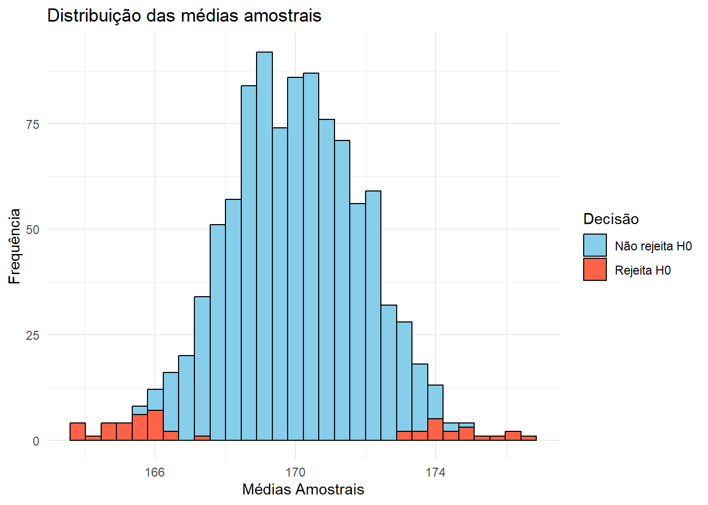
4.11.1 4.4.4 Teste Unilateral À Direita
O teste unilateral à direita verifica se a média populacional é maior que um valor específico \(\mu_0\):
\[ \begin{align} H_0 &: \mu \leq \mu_0 \quad \text{(hipótese nula)} \\ H_1 &: \mu > \mu_0 \quad \text{(hipótese alternativa)} \end{align} \]
A estatística de teste utilizada é a média amostral:
\[ \bar{X} = \frac{1}{n} \sum_{i=1}^{n} X_i \]
Sabemos que, usando o estimador da variância amostral \(S^2\), a estatística padronizada:
\[ T = \frac{\bar{X} - \mu}{S/\sqrt{n}} \]
segue uma distribuição t de Student com \(n-1\) graus de liberdade, sob \(H_0\). Da mesma forma como antes, o nível de significância é \(\alpha\). No teste unilateral à direita, rejeitamos \(H_0\) se a média amostral estiver muito maior que \(\mu_0\):
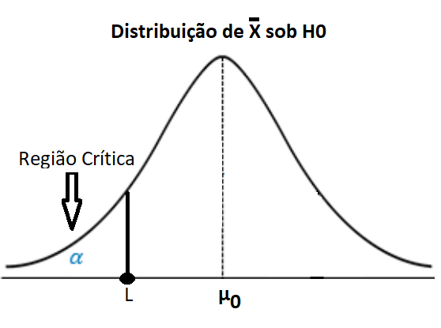
Isto é,
\[ \text{Rejeitamos } H_0 \text{ se } \bar{X} \leq L \]
Queremos determinar o valor de \(L\) que satisfaz:
\[ P(\bar{X} \geq L | H_0) = \alpha \]
Sabemos que:
\[ P(\bar{X} \leq L | H_0) = \alpha \to \frac{L-\mu_0}{S/\sqrt{n}} = t_{\alpha,n-1} \to L = \mu_0 - t_{\alpha,n-1} \frac{S}{\sqrt{n}} \]
Portanto, rejeitamos \(H_0\) se:
\[ \bar{X} \geq L = \mu_0 + t_{\alpha,n-1} \frac{S}{\sqrt{n}} \]
Exercício:
Considere que \(X_1,X_2,\cdot,X_n\) seja uma amostra aleatória de tamanho \(n=25\) de de uma população com distribuição Normal com parâmetros \(\mu = 170\) e \(\sigma^2 = 100\). Considere o teste das seguintes hipóteses:
\[ \begin{align} H_0 &: \mu \leq 170 \quad \text{(hipótese nula)} \\ H_1 &: \mu > 170 \quad \text{(hipótese alternativa)} \end{align} \]
Vamos simular \(B=1000\) amostras dessa população e, para cada amostra, vamos testar as hipóteses acima utilizando o método da região crítica com um nível \(\alpha=5%\). Note que, em todas as réplicas, teremos diferentes regiões críticas, uma vez que o desvio padrão amostral \(s\) varia de amostra para amostra. O objetivo é verificar se em aproximadamente 5% dessas amostras rejeitamos a hipótese nula, quando sabemos que, na verdade, ela é verdadeira (erro do tipo I).
4.12 Variância Populacional (caso normal)
Vamos construir testes de hipóteses para a variância populacional \(\sigma^2\), assumindo que:
- Os dados vêm de uma população com distribuição normal \(N(\mu, \sigma^2)\)
- A média populacional \(\mu\) é desconhecida
- A amostra \(X_1, X_2, …, X_n\) é aleatória e de tamanho \(n\) qualquer.
4.12.1 Teste Bilateral
O teste bilateral verifica se a variância populacional é igual a um valor específico \(\sigma_0^2\) ou diferente:
\[ \begin{align} H_0 &: \sigma^2 = \sigma_0^2 \quad \text{(hipótese nula)} \\ H_1 &: \sigma^2 \neq \sigma_0^2 \quad \text{(hipótese alternativa)} \end{align} \]
A estatística de teste usada é a variância amostral:
\[ S^2 = \frac{1}{n-1} \sum_{i=1}^{n} (X_i - \bar{X})^2 \]
A estatísitca de teste usada é baseada na variância amostral:
\[ S^2 = \frac{1}{n-1} \sum_{i=1}^{n} (X_i - \bar{X})^2 \]
Assim, sob \(H_0\), sabemos que:
\[ \chi^2 = \frac{(n-1)S^2}{\sigma_0^2} \sim \chi^2_{n-1} \]
segue uma distribuição qui-quadrado com \(n-1\) graus de liberdade.
Fixado o nível de significância \(\alpha\), no teste bilateral, rejeitamos \(H_0\) se a estatística de teste \(\chi^2\) for muito pequena ou muito grande em relação ao valor esperado sob \(H_0\).
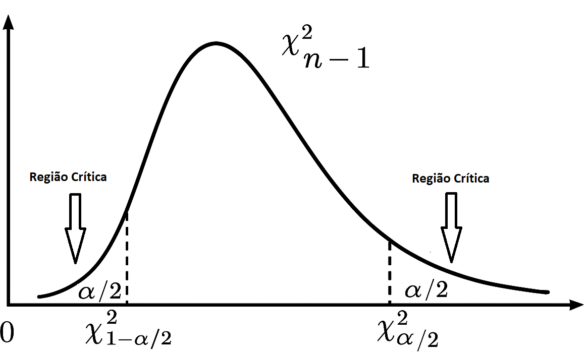
Portanto, rejeitamos \(H_0\) se:
\[ \chi^2 \leq \chi^2_{ \alpha/2, n-1} \quad \text{ou} \quad \chi^2 \geq \chi^2_{ 1-\alpha/2, n-1} \]
Exemplo:
Considere que \(X_1,X_2,\cdot,X_n\) seja uma amostra aleatória de tamanho \(n=16\) de de uma população com distribuição Normal com parâmetros \(\mu\) e \(\sigma^2\). Considere o teste das seguintes hipóteses:
\[ \begin{align} H_0 &: \sigma^2 = 100 \quad \text{(hipótese nula)} \\ H_1 &: \sigma^2 \neq 100 \quad \text{(hipótese alternativa)} \end{align} \]
Considerando um \(\alpha\) de 5%, temos que a estatística de teste tem distribuição qui-quadrado com \(n-1=15\) graus de liberdade.
De acordo com \(\alpha\), vamos simular \(B=1000\) amostras de tamanho \(n=16\) de uma população Normal \((\mu=0, \sigma^2=100)\) e, para cada amostra, vamos testar as hipóteses acima utilizando o método da região crítica com um nível \(\alpha=5%\). Note que, em todas as réplicas, teremos a mesma região crítica. O objetivo é verificar se em aproximadamente 5% dessas amostras rejeitamos a hipótese nula, quando sabemos que, na verdade, ela é verdadeira (erro do tipo I). Dessa forma, o nosso objetivo é estimar, empiricamente, o nível \(\alpha\).
# Parâmetros populacionais de X
media_real <- 170
sigma_real <- 10
sigma2_real <- 100
# Tamanho da amostra
n <- 16
# Número de réplicas (simulações)
B <- 1000
# Nível de significância
alfa <- 0.05
# Simulação das médias amostrais
set.seed(2025)
vars <- replicate(B, var(rnorm(n, media_real, sigma_real)))
# Estatística de teste
chi = (n-1)*vars/sigma2_real
# valores críticos
chi_critico1 <- qchisq(alfa/2,df=n-1)
chi_critico2 <- qchisq(alfa/2,df=n-1,lower.tail=F)
# Cria um data frame com os valores das medias e a decisão do teste
df <- data.frame(chi = chi) %>%
mutate(rejeita_H0 = chi <= chi_critico1 | chi >= chi_critico2 )
# Porcentagem de testes que rejeitaram a hipótese nula
rejeicao = mean(df$rejeita_H0)# Gráfico
ggplot(df, aes(x = chi, fill = rejeita_H0)) +
geom_histogram(color = "black", bins = 30) +
scale_fill_manual(values = c("FALSE" = "skyblue", "TRUE" = "tomato"),
labels = c("Não rejeita H0", "Rejeita H0"),
name = "Decisão") +
labs(title = "Distribuição da estatística de teste",
x = "Médias Amostrais",
y = "Frequência") +
theme_minimal()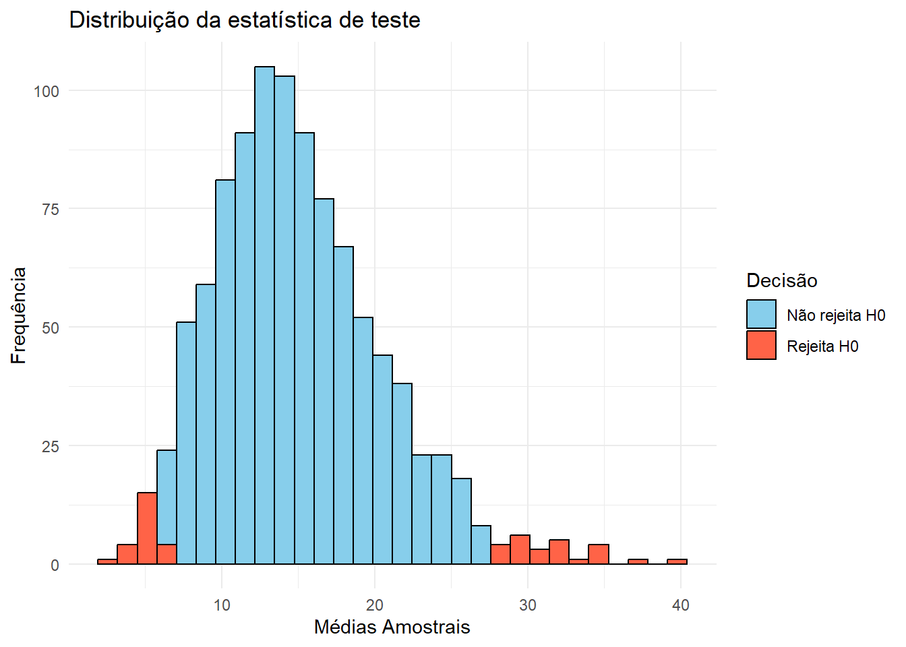
4.12.2 Teste Unilateral À Direita
O teste unilateral à direita verifica se a variância populacional é maior que um valor específico \(\sigma_0^2\):
\[ \begin{align} H_0 &: \sigma^2 = \sigma_0^2 \quad \text{(hipótese nula)} \\ H_1 &: \sigma^2 > \sigma_0^2 \quad \text{(hipótese alternativa)} \end{align} \]
A estatística de teste usada é baseada na variância amostral:
\[ S^2 = \frac{1}{n-1} \sum_{i=1}^{n} (X_i - \bar{X})^2 \]
Assim, sob \(H_0\), sabemos que:
\[ \chi^2 = \frac{(n-1)S^2}{\sigma_0^2} \sim \chi^2_{n-1} \]
segue uma distribuição qui-quadrado com \(n-1\) graus de liberdade.
Fixado o nível de significância \(\alpha\), no teste unilateral à direita, rejeitamos \(H_0\) se a estatística de teste \(\chi^2\) for muito grande em relação ao valor esperado sob \(H_0\).
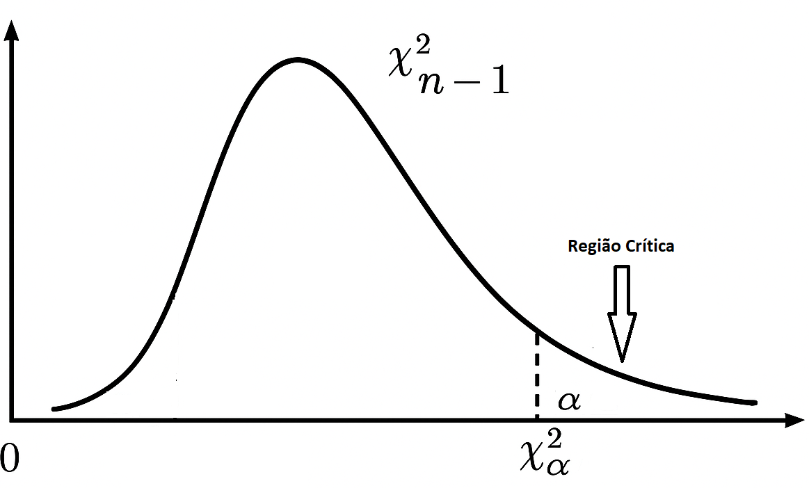
Portanto, rejeitamos \(H_0\) se:
\[ \chi^2 \geq \chi^2_{ 1-\alpha, n-1} \]
Exemplo:
Considere que \(X_1,X_2,\cdot,X_n\) seja uma amostra aleatória de tamanho \(n=16\) de de uma população com distribuição Normal com parâmetros \(\mu\) e \(\sigma^2\). Considere o teste das seguintes hipóteses:
\[ \begin{align} H_0 &: \sigma^2 = 100 \quad \text{(hipótese nula)} \\ H_1 &: \sigma^2 > 100 \quad \text{(hipótese alternativa)} \end{align} \]
Considerando um \(\alpha\) de 5%, temos que a estatística de teste tem distribuição qui-quadrado com \(n-1=15\) graus de liberdade.
De acordo com \(\alpha\), vamos simular \(B=1000\) amostras de tamanho \(n=16\) de uma população Normal \((\mu=170, \sigma^2=100)\) e, para cada amostra, vamos testar as hipóteses acima utilizando o método da região crítica com um nível \(\alpha=5%\). Note que, em todas as réplicas, teremos a mesma região crítica. O objetivo é verificar se em aproximadamente 5% dessas amostras rejeitamos a hipótese nula, quando sabemos que, na verdade, ela é verdadeira (erro do tipo I). Dessa forma, o nosso objetivo é estimar, empiricamente, o nível \(\alpha\).